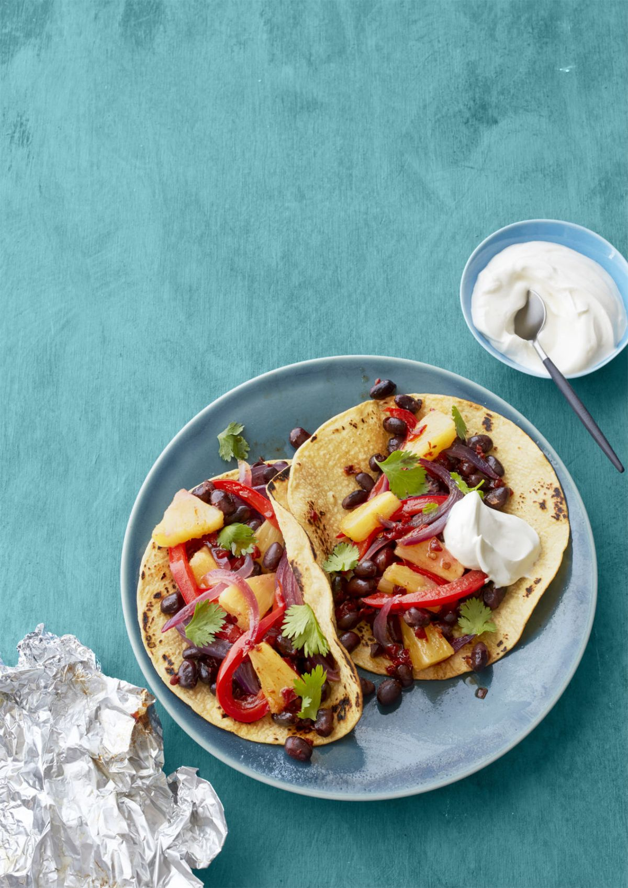

Pineapple and Black Bean Fajitas
Mexican goes meatless with these sweet and smoky vegetarian fajitas.

Ingredients
- 1 (15-oz.) can black beans, rinsed
- 1 tbsp. finely chopped chipotles in adobo
- 1/4 small pineapple, cored and cut into thin 1/2" pieces
- 2 small red peppers, sliced
- 1 small red onion, thinly sliced
- 8 small corn tortillas, warmed
- Fresh cilantro, for serving
- Sour cream, for serving
Directions
- Heat oven to 425 degrees F or an outdoor grill to medium-high. Tear off four 12" squares of foil and arrange on two baking sheets.
- Toss together the beans and chipotles, then divide among the pieces of foil. Top with the pineapple, peppers and onion. Cover with another piece of foil and fold each edge up and over three times. Roast or grill (covered) for 15 minutes.
- Transfer each packet to a plate. Using scissors or a knife, cut an "X" in the center and fold back the triangles. Spoon the mixture into tortillas and top with cilantro and sour cream, if desired.
PER SERVING: 229 calories, 2 g fat (0 g saturated), 0 mg chol, 280 mg sodium, 9 g protein, 48 g carbohydrate, 10 g fiber
Woman's Day Kitchen
Back Home